Pedro Holanda 2026-07-31 · 21 min
TL;DR: Starting with v2.0, scheduled for fall 2026, DuckDB will support asynchronous reads of Parquet and CSV files. This can significantly speed up queries when synchronous I/O does not saturate the available bandwidth, as is typical in EC2/S3 compute-storage setups.
It doesn't matter how fast query operators are in a database system if we can't pull in the data quickly. For most of DuckDB's history, however, this problem was largely avoided by pruning data early. By pushing down filters and projections, we could ensure that we only read what we actually needed.
This worked particularly well because DuckDB primarily ran locally, with its main use case being as a quick-draw database engine for querying data directly from your machine's SSD. We could split the data into several partitions, such as row groups for Parquet files or fixed-size buffers for CSV files, and load them with low latency and high bandwidth. As a result, the main bottlenecks were elsewhere: subqueries, joins, aggregations, and so on. The actual data access path received less attention because synchronous access was perfectly suitable for this use case.
As usual, things changed. We realized that DuckDB's architecture was a great fit for querying remotely stored large-scale datasets, such as data lakes (e.g., DuckLake). Since May this year, we can even run DuckDB as a server using the Quack protocol. The original expectation of data files sitting on a local SSD therefore no longer always holds.
The practical implication of these changes is that many current DuckDB setups need to transfer files from remote storage to the machine that will actually process them. For data lakes, for example, a typical setup is to store the data in blob storage, such as S3, and process it on an EC2 machine in the same region. In this setup, latency and bandwidth play a much more significant role. If we cannot issue enough concurrent requests to use the available network bandwidth, performance can suffer drastically, with threads spending a large amount of their time waiting for remote reads instead of processing data.
As an example, let's consider a simple query over a remote Parquet file. For simplicity, let's assume we only have a single thread executing.
FROMread_parquet('s3://bucket/file.parquet');A Parquet scan is partitioned into row-group-based jobs, with each job containing one or more fetch tasks that issue byte-range requests. With synchronous I/O, the worker thread will be blocked, waiting for the data to arrive at the machine before performing actual work, such as decoding, aggregating, and so on. You can see a visual depiction in the figure below, where the thread is blocked from doing any work while it waits for the read to finish.
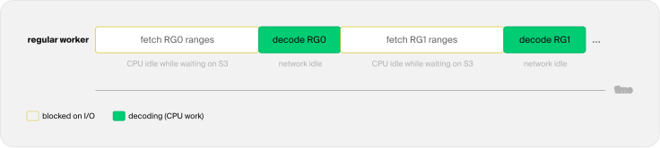
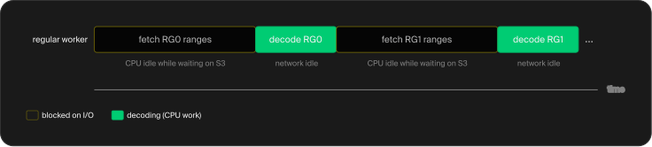
Synchronous read
To address this, we have been implementing asynchronous I/O pipelines in DuckDB. They are currently implemented for Parquet and for uncompressed, seekable UTF-8 CSV files, with support for other formats, such as DuckDB's native format and JSON, still to come. In the remainder of this blog post, we will give a simple explanation of how asynchronous I/O is implemented in DuckDB and provide benchmarks for both Parquet and CSV files.
If you would like to try asynchronous I/O now, you can do so by using DuckDB's v2.0.0-dev preview builds. Asynchronous I/O will be used by default from the next major DuckDB version, v2.0, released in the fall.
Asynchronous I/O
The conceptual idea of asynchronous I/O is rather simple: we should be able to start an I/O operation without blocking the worker thread that requested it. Applied to our Parquet example, the same picture would look like the following:
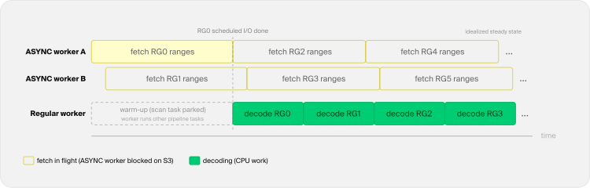
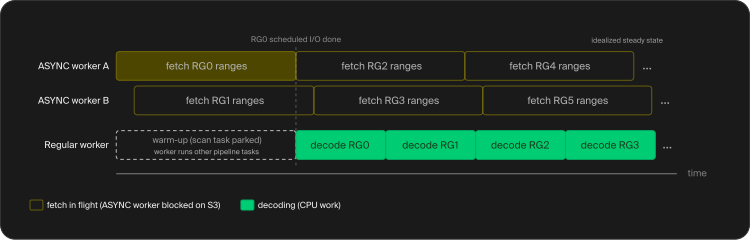
Asynchronous read
In this example, we have two ASYNC threads and one regular worker thread. The ASYNC threads keep fetch tasks in flight while the worker thread decodes data. During the initial warm-up, the scan task parks, leaving the worker thread free to run other pipeline tasks. Once the first job is ready, fetching and decoding can overlap.
In DuckDB, we implemented something similar. We have two separate thread pools:
REGULAR– This pool contains our worker threads (by default: one for each available CPU thread). These are the ones that do real work, like decoding, joins, and aggregations. They prioritize regular work but can also perform I/O tasks when idle.ASYNC– A pool of threads intended for asynchronous tasks, primarily blocking I/O.
The main reason we have these two different pools is that, for remote I/O, these threads can spend almost all their time blocked, waiting for an HTTP response, for example, and hence have very little CPU utilization. Because of that, we have many more ASYNC workers than system threads, with the default setting being 4 * system threads and the total being capped at 256.
It's of utmost importance to keep as many of our ASYNC threads busy as possible. To ensure that, we implement a read-ahead strategy instead of issuing reads on demand. This means scheduling fetch tasks ahead of what our regular worker threads currently need.
One thing we need to be attentive to is that read-ahead buys throughput by holding memory. If decoding is slow and the network is fast, prefetched data can accumulate and lead to out-of-memory issues. To mitigate this, we also implemented asynchronous memory governance. Both read-ahead and memory governance will be explained in more detail in the following sections.
Read-Ahead Queue
The idea of read-ahead is also straightforward. Instead of starting a read at the exact moment a regular worker needs the data, we schedule fetch tasks for work that lies further ahead. While a regular worker decodes the current job, the ASYNC threads are already pulling in data for the next jobs. The goal is to keep enough fetch tasks in flight to hide the latency of remote storage.
The jobs are units of work that can be scheduled and processed independently, and they can be different depending on the underlying file format. For a Parquet file, a job is one row group of one file. For a CSV file, a job is a scan boundary that generally covers a fixed byte range within the file.
A Parquet job might be broken down into multiple fetch tasks depending on the query projections, filter pushdowns, physical column locations, and which nearby byte ranges can be combined. The two fetch tasks in the figure below are illustrative, as their exact grouping and sizes depend on the file and query.
For CSV files, we don't have the same granularity of information as we do for Parquet files. A job's fetch tasks load its starting buffer if it is not already in memory and, when the scan boundary reaches the end of that buffer, the following buffer as well (e.g., to handle lines that are split across two buffers).
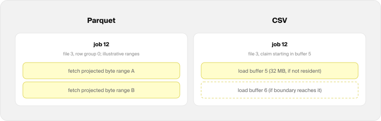
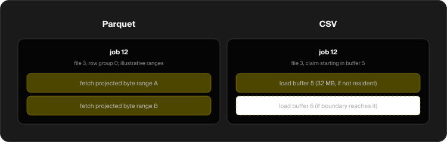
Jobs
Filling the queue requires no dedicated producer thread. Any regular worker that comes looking for scan work first tops up the queue as far as it is allowed to. The limit is either given by a user-specified number of slots or by a memory budget. If there is space, a job and its fetch tasks are created. The fetch tasks are scheduled immediately on the ASYNC pool, while the job is admitted to the read-ahead queue in batch order.
ASYNC threads execute individual fetch tasks independently of the job queue's claim order. Fetch tasks from the same job can run concurrently, although no particular assignment to ASYNC threads is guaranteed. All fetch tasks of a job share a countdown, and the fetch task that brings it to zero completes the job's I/O.
A worker thread claims the oldest job in the queue and checks that countdown. If I/O is done, the worker starts decoding the job. If not, it parks the scan task and is free to run other pipeline tasks. The last fetch task then unblocks the scan task, which may resume on any regular worker.
Claiming the job also immediately frees a queue slot, allowing any regular worker looking for scan work to produce a replacement job at the back of the queue. The figure below depicts this cycle:
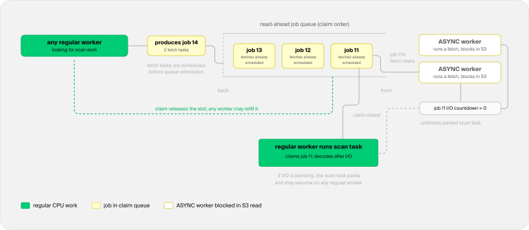
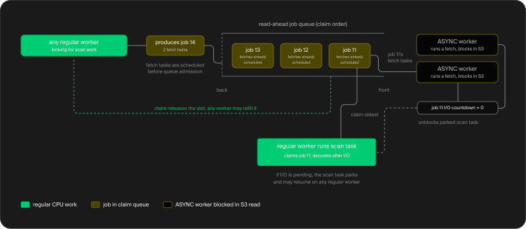
Read-ahead cycle
Memory Management
Keeping more fetch tasks in flight consumes more memory. To determine a budget and avoid out-of-memory issues, we introduced the read_ahead_depth configuration option. It can have three types of values:
-1(default): unlimited depth, bounded by memory.N > 0: at mostNjobs ahead, with no memory budget.0: read-ahead is off, each scan task schedules I/O only for its own job.
To configure it, use the SET clause, e.g.:
SETread_ahead_depth=5;In the default mode, the budget is negotiated with the temporary memory manager, which is the same manager that splits memory between concurrent joins, sorts, and window operators. When there is a lot of memory pressure, for example, because an operator is using a large amount of memory, queue reservations might instantly be over budget. In practice, this means that the queue will only allow one job at a time, and the scan will behave close to a synchronous scan.
When the memory-heavy operator finishes, the memory manager has more budget to give, and the queue fills back up.
Benchmarks
Asynchronous I/O should have the largest effect when the latency of synchronous requests prevents us from using the available remote bandwidth. To measure this effect, we ran TPC-H Query 6 at SF100, with the data sitting on S3, and compared the results against DuckDB v1.5.5, our latest stable release. The SF100 dataset was written as a single file per table for both the Parquet and CSV benchmarks, with the lineitem table containing 600,037,902 rows.
For compute, we used an EC2 r7i.16xlarge machine (64 vCPUs and 512 GB of RAM), with both the machine and the S3 bucket with the data located in the same region. We executed the query five times and report the mean execution time. The files were never cached (i.e., SET enable_external_file_cache = false;), meaning that every execution read the data straight from S3.
Parquet
The Parquet file is approximately 22 GB and has around 4,880 row groups, with each row group containing approximately 122,880 rows. With asynchronous I/O, the mean runtime drops from 8.230 seconds to 2.844 seconds, making the query almost 3× faster.
| Version | Q6 runtime |
|---|---|
| v1.5.5 (synchronous) | 8.230 s |
| v2.0.0-dev (asynchronous I/O) | 2.844 s |
Below we also show the network throughput over the course of the query:
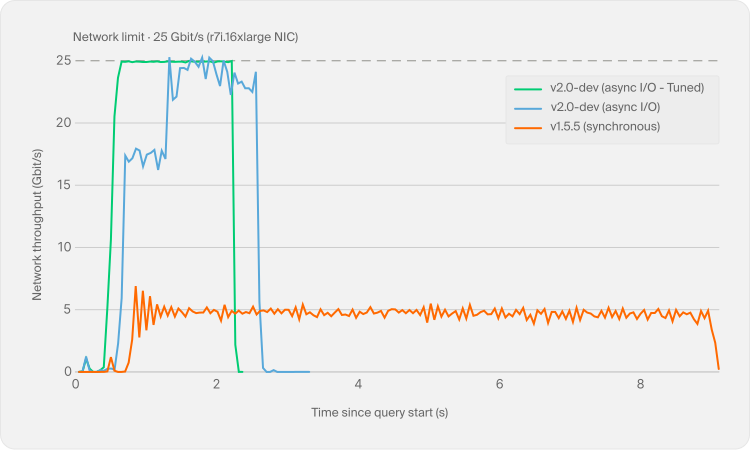
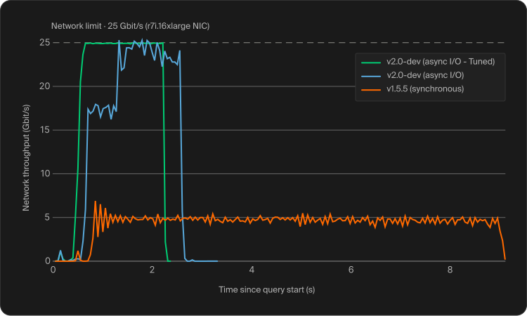
Network throughput
In it, we run DuckDB v1.5.5 and two variations of DuckDB v2.0.0-dev. One with the read-ahead depth determined by the memory governor, and one tuned for this machine, where we cap the read-ahead at 64 in-flight jobs and adjust the I/O settings (SET async_threads = 48; SET http_retries = 8; SET http_retry_wait_ms = 50; SET http_retry_backoff = 2). We can see that v2.0.0-dev uses the available bandwidth much more effectively, approaching the network limit and reaching it at several points. The tuned version goes further. With fewer, hotter connections and cheap retries, the throughput variance drops to a minimum and the 25 Gbit/s network stays almost fully saturated. Its query time was 2.227 seconds, reducing the runtime of the untuned v2.0.0-dev run by 21.7% and making it about 3.7× faster than DuckDB v1.5.5. In comparison, v1.5.5 stays around 5 Gbit/s because its synchronous reads do not keep enough requests in flight to saturate the network.
One other detail worth noting is that, in all experiments, a few hundred milliseconds pass before the first bump in network traffic, followed by another few hundred milliseconds before the main data transfer begins. The first gap is the time needed to open a DuckDB connection, perform the first TLS handshake, and open the file. The bump corresponds to downloading the file footer, while the second gap comes from processing the information in the footer before executing the query. We believe this is an area we can investigate and optimize further before the v2.0 release.
We sampled the NIC's received-byte counter every 50 ms and calculated the throughput from the change in bytes between samples. We independently confirmed that the machine can access the network at 25 Gbit/s with both a DuckDB full-file read and the s5cmd tool. Local Disk
Remote storage is the main target for asynchronous I/O, but cold local reads give us a useful contrast. To measure them, we ran TPC-H Query 6 over the SF100 Parquet file, this time with the file sitting on the local disk of a MacBook Pro (Apple M4 Max, 14 cores, and 36 GB of RAM). Since the benefit of asynchronous I/O on local disks comes from cold reads, we cleared the OS caches (with the macOS purge command) between runs, making sure every execution actually read the file from disk.
| Version | Q6 runtime |
|---|---|
| v1.5.5 (synchronous) | 1.321 s |
| v2.0.0-dev (asynchronous I/O) | 0.883 s |
We can see that, for cold runs, asynchronous I/O is approximately 1.5× faster, reducing runtime by about 33%. The performance difference is much smaller than in the cases presented above, due to the SSD having much lower latency and much higher bandwidth than the EC2/S3 network. For hot runs, the difference is negligible, as there is no disk access happening if data is properly cached.
Small Files
Partitioned datasets are a particularly relevant use case here, as partitioning can easily spread the data across many small files. To see how asynchronous I/O behaves in this setup, we also performed a Parquet run using the same TPC-H SF100 dataset. Instead of using one file, we generated 976 files with five row groups each. Each file contains approximately 615,000 rows and is around 22 MB in size.
| Version | Q6 runtime |
|---|---|
| v1.5.5 (synchronous) | 9.344 s |
| v2.0.0-dev (asynchronous I/O) | 2.945 s |
We can see that v2.0.0-dev delivers a similar performance improvement here as it does for the single-file benchmark, running around 3× faster. This shows that read-ahead can also parallelize across multiple files without becoming bottlenecked by opening files or fetching their footers.
Large Row Groups
We also wanted to see what happens at the other extreme, when a Parquet file has only a few very large row groups. For this experiment, we generated six versions of the same TPC-H SF100 lineitem table as a single file, changing only the requested row group (RG) size, and ran Q6 using DuckDB v2.0.0-dev. The table below reports the runtime for each version.
| Rows / RG | RGs | Approx. RG size (MB) | Total file size (MB) | Time |
|---|---|---|---|---|
| 122,880 | 4,886 | ~4 MB | ~21,600 MB | 2.74 s |
| 1,966,080 | 306 | ~70 MB | ~21,400 MB | 2.11 s |
| 9,375,593 | 64 | ~320 MB | ~20,500 MB | 2.27 s |
| 62,914,560 | 10 | ~1,500 MB | ~14,700 MB | 3.69 s |
| 150,009,476 | 4 | ~3,200 MB | ~12,800 MB | 8.01 s |
| 600,037,902 | 1 | ~12,300 MB | ~12,300 MB | 25.26 s |
At first, larger row groups decrease query times. As we increase the row-group size, request latency is amortized over much larger transfers. However, beyond a certain point, the available parallelism starts to fall. A row group is DuckDB's unit of Parquet scan parallelism, so ideally a scan should expose at least one row group per system thread. On this 64-vCPU machine, the version with 64 row groups provides exactly that and finishes in 2.27 seconds, while the fastest run comes from the version with 306 row groups, at 2.11 seconds.
However, with fewer row groups than threads, we lose parallelism and can no longer saturate the network. For Q6, the projections and the physical location of the columns result in two fetch requests per row group. Four row groups therefore expose only about eight concurrent S3 streams, raising the runtime to 8.01 seconds. For the largest configuration, the file contains a single row group, and its I/O is effectively reduced to two giant streams, pushing the runtime to 25.26 seconds. This happens even though better compression makes the file a little over half the size of the version with 4,886 row groups. In this case, the extra bandwidth required by smaller row groups is cheaper than the parallelism lost with extremely large ones.
Concurrent Queries
The effect becomes even clearer when several queries run at the same time. For this experiment, we ran TPC-H queries 1, 6, 9, and 18 concurrently against the same SF100 Parquet dataset on S3, using a single DuckDB instance. We picked these queries because they cover a mix of scans, aggregations, and joins, with different CPU and memory requirements. We repeated the experiment with the default memory configuration and with memory limits of 16 GB and 8 GB. The total runtime is the wall-clock time until all four queries finish. We report the average and peak CPU utilization (number of cores utilized), the peak bandwidth (bw.) and the peak resident set size (RSS).
| Version | Mem. limit | Runtime | Avg. CPU | Peak CPU | Peak bw. | Peak RSS |
|---|---|---|---|---|---|---|
| v1.5.5 | default | 35.8 s | 5.9 | 35.7 | 10.7 Gbit/s | 14.5 GB |
| v2.0.0-dev | default | 15.6 s | 48.1 | 64.0 | 24.9 Gbit/s | 20.1 GB |
| v1.5.5 | 16 GB | 35.6 s | 6.1 | 25.7 | 17.4 Gbit/s | 14.1 GB |
| v2.0.0-dev | 16 GB | 22.7 s | 35.2 | 63.4 | 24.8 Gbit/s | 15.7 GB |
| v1.5.5 | 8 GB | 35.9 s | 6.9 | 38.8 | 16.8 Gbit/s | 10.4 GB |
| v2.0.0-dev | 8 GB | 24.2 s | 30.3 | 63.7 | 25.0 Gbit/s | 11.5 GB |
With the default memory configuration, DuckDB v1.5.5 keeps an average of only about 6 of the 64 cores busy. In other words, around 90% of the machine sits idle waiting for synchronous S3 reads. DuckDB v2.0.0-dev, on the other hand, averages 48 busy cores, reaches all 64 at its peak, and saturates the 25 Gbit/s network. As a result, all four queries finish in less than half the time.
The memory results are also interesting. As we lower the limit, the memory governor reduces the read-ahead backlog, while memory-heavy operators such as those in Q18 can spill to disk. This lowers the peak physical memory used by the DuckDB process (i.e., RSS) of DuckDB v2.0.0-dev from 20.1 GB with the default configuration to 15.7 GB with a 16 GB limit and 11.5 GB with an 8 GB limit. The additional spilling and reduced read-ahead also lower average CPU utilization and increase the runtime, but v2.0.0-dev continues to saturate the network and remains substantially faster than v1.5.5 in both cases.
One might notice that the 8 GB result still peaks at 11.5 GB of RSS. This is because jemalloc keeps recently freed pages resident for about one second so they can be reused. This memory is no longer counted by DuckDB's memory manager, and v1.5.5 shows the same allocator behavior.
CSV
The effect is larger on CSV files. The CSV file is 80.89 GB, and asynchronous I/O reduces the mean runtime from 878 seconds to just 45 seconds, making the query almost 20× faster. CSV is row-oriented, so the scan transfers substantially more data and performs fixed-size buffer reads, making concurrent remote reads especially valuable.
| Version | Q6 runtime |
|---|---|
| v1.5.5 (synchronous) | 877.563 s |
| v2.0.0-dev (asynchronous I/O) | 45.264 s |
As in the other experiments, we used the default memory-governed read-ahead depth, so this run was not tuned to keep the 25 Gbit/s network saturated on average.
Conclusion
In this blog post, we presented the recent work on asynchronous I/O for Parquet and CSV files. Most of its benefit comes from accessing remote data, but cold local reads can also benefit, albeit less. Next, we plan to add async reads for JSON and DuckDB-native files, as these are the two other formats most relevant to DuckDB core. Formats that live in out-of-tree extensions are not on the roadmap yet. We will also investigate io_uring, Linux's asynchronous I/O interface, which could reduce system-call overhead and the number of threads blocked on I/O. If it proves beneficial in practice, we will integrate it into DuckDB. One important thing to notice is that any of the data lake solutions supported in DuckDB can already benefit from asynchronous I/O automatically as long as the underlying data format is Parquet (or CSV, if you are brave enough).
In this article
Recent Posts
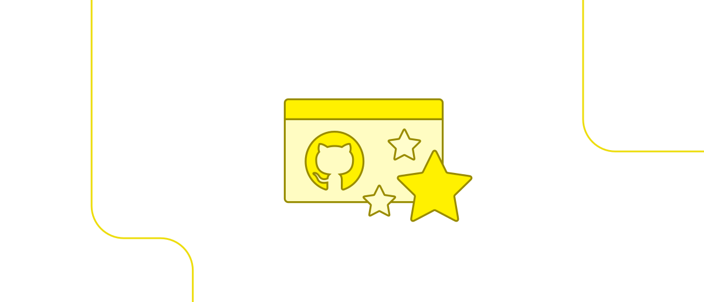
Thank You for 40 000 Stars on GitHub
2026-08-05
release
The DuckDB team
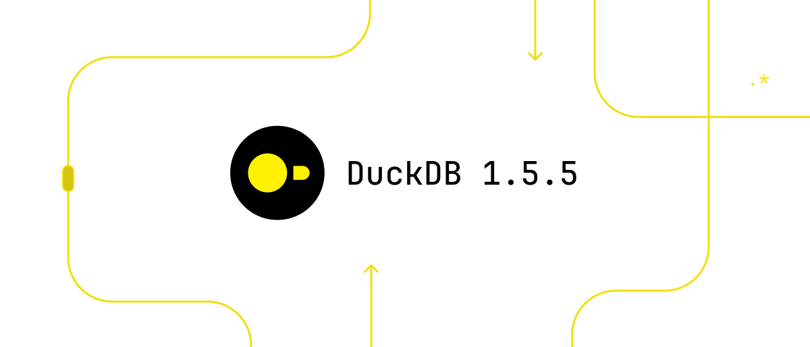
Announcing DuckDB 1.5.5
2026-07-22
release
The DuckDB team
Announcing DuckDB 1.4.5 LTS (Andium)
2026-06-17
release
The DuckDB team